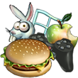
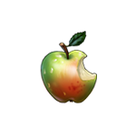
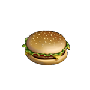
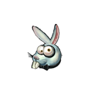
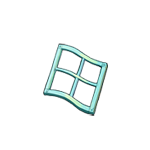

Получено: файл; исходный URL. Иллюстрация «Коллекция Брендов» из каталога ViveR_9, сопоставлена по точному названию; возможны отличия версий. Оригинальный файл без перекодирования; авторство отдельно не установлено. Страница: источник.

Коллекция брендов
ВКонтакте; дата источника не указана- Тип
- Коллекции
- Версия и дата
- ВКонтакте; дата источника не указана
Элементы коллекции













Данные по источнику · ВКонтакте · дата источника не указана
Предварительно: один источник; требует сверки. Требуется сверка.
- Награда
- Флюгер и 10 лопат
- Где копать
- Бассейн, бизнес-центр, Белый дом, каменный идол, жёлтые и белые фиалки
- Состав (источник Zombie-island)
- Яблоко искушения; Бутергер; Голова кролика; Джойстик; Кривая форточка.
- Награда (источник Zombie-island)
- 1 Флюгер; 10 Супер-лопаты.
- Где копать Коллекцию Брендов в Зомби Ферме лопатами
- Часовая башня; Жемчужина востока; Летучий корабль; Бассейн; Белый дом; Бизнес-Центр; Идол каменный; Фиалки белые; Фиалки желтые; Буква У бел; Буква И бел; Марафонец; Флаг Марафонца; Фургон; Купол за голоса; Купол за зомбаксы; Готический склеп; Весенняя ваза 3; Весенняя ваза 2; Весенняя ваза 1.
- Коллекция Брендов выпадает из мешков Кладоискателей
- Кладоискатель; Кладоискатель с мозгами.
- Коллекцию Брендов можно найти в ценностях и сокровищах игры Зомби Ферма
- Секретный клад; Сундук Чудовища; Варежки; Коллекционная посылка; Коллекционный; Коллекционер; Картман-сюрприз; Клубничное.
Данные по источнику · браузерная версия; платформа в ответе не уточнена · Дата на странице (формат не уточнён): 15/04/2015
Предварительно: Ответ справочного сайта; достоверность и независимость от других фанатских источников не установлены. Возможны различия редакций и версии.. Требуется сверка.
- Ответ источника
- Брендовая коллекция Зомби Ферма состоит из 5 абсолютно разных предметов: кривой форточки, яблока искушения, джойстика, бутергера и головы кролика. За ее обмен полагается награда в размере одного флюгера и 10 супер-лопат. Элементы этой необычной коллекции могут быть найдены под множеством декораций и построек, в том числе под Летучим кораблем, каменным идолом, часовой башней, разными буквами, разноцветными фиалками, новой избой, белоснежной яхтой и готическим склепом. Иногда составляющие коллекции можно найти в Клубничном яйце и в Картман-сюрпризе. Также часто они выпадают из разных кладов и сундуков.
Данные по источнику · браузерная версия; платформа в ответе не уточнена · Дата на странице (формат не уточнён): 14/04/2015
Предварительно: Ответ справочного сайта; достоверность и независимость от других фанатских источников не установлены. Возможны различия редакций и версии.. Требуется сверка.
- Ответ источника
- Коллекция брендов в игре Зомби ферма включается в себя 5 предметов, которые в точности ассоциируются у игроков с самыми популярными брендами в мире. В их число входит: яблоко искушения(Apple), бутергер(McDonald’s), голова кролика(Playboy), джойстик(Playstation) и кривая форточка(Microsoft). Найти брендовую коллекцию в Зомби ферме можно под такими сооружениями: Часовая башня Жемчужина востока Летучий корабль Бассейн Белый дом Бизнес центр Идол Марафонец Фургон Купол Новая изба Готический склеп Полную коллекцию брендов игрок может обменять на один флюгер и 10 супер-лопат.
Данные по источнику · браузерная версия; платформа не указана · дата редакции не установлена
Предварительно: Содержимое списка: изображения и колонки могут терять смысл при извлечении текста; отдельная страница и дата не проверены. Подписи alt иногда ошибочны.. Требуется сверка.
Данные по источнику · Мой Мир (Mail.ru); историческая таблица · дата редакции не установлена
Предварительно: Источник сам использует знаки вопроса; не следует считать такие места подтверждёнными. Возможны изменения патча и платформы; независимость от других справочников не доказана.. Требуется сверка.
- Название в источнике
- Коллекция брендов
- Где копать
- Бассейн, Бизнес-Центр, Белый Дом, Плюшевые "Л" "Ю" "Б" "О" "В" "Ь", У Кладоискателя в мешках, Секретные клады
- Награда
- Флюгер и 10 лопат
Данные по источнику · браузерная версия; на сайте указана игра ВКонтакте · дата редакции не установлена
Предварительно: Исторический текст; сильно совпадает со справкой Zommbie.at.ua, независимость не доказана. Отрицания и доступность могут измениться с патчем.. Требуется сверка.
- Где искать по странице «Зомбастики»
- Бизнес-центр, белый дом, белые и желтые фиалки.
Данные по источнику · историческая браузерная версия, платформа не указана · 10.01.2014 — дата в каталоге; дата редакции материала неизвестна
Предварительно: Фанатский список без вероятностей и уточнения площадки; независимость от других источников не установлена.. Требуется сверка.
- Где искать по списку сайта
- Бизнес-центр, белый дом, белые и желтые фиалки
- Оговорка
- Список может относиться к разным условиям, инструментам и периодам игры; не доказывает гарантированное выпадение. Заявления «только» и «невозможно» относятся лишь к времени и версии источника.
Данные по источнику · историческая браузерная игра; площадка не уточнена · 25.02.2013 — дата каталога; редакция неизвестна
Предварительно: Проверен текст в каталоге сайта; вероятность выпадения не указана. Исторические версии и даты могут различаться; списки и награды требуют сверки, независимость сайта от других справочников не установлена.. Требуется сверка.
- Награда в источнике
- По источнику: 100 опыта и 1 волчья ягода. Эти данные совпадают с соседней байкерской коллекцией и отличаются от других описаний коллекции брендов; возможна ошибка копирования.
- Места в источнике
- Бассейн, бизнес-центр, белый дом, каменный идол, жёлтые и белые фиалки, камни.
Связанные сущности
нет проверенных связей — требуется сверка.
Источники
- прочитано; проверка 2026-11-21
- прочитано: Zombie-island.moy.su; проверка 2026-11-21
- FatalGame: прочитан отдельный ответ; дата на странице 15/04/2015
- FatalGame: прочитан отдельный ответ; дата на странице 14/04/2015
- ZOMBIA: прочитана карточка в списке
- Ссылка на отдельную страницу; отдельно не проверена
- Zombiemail: строка таблицы коллекций; Мой Мир
- Зомбастики: прочитана соответствующая строка; возможная копия другого справочника
- ViveR_9: изображение в каталоге коллекций; совпадение названия
- zommbie.at.ua: где искать коллекции
- zombi-ferma.ucoz.net: каталог коллекций